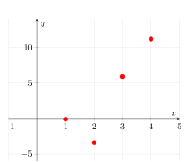
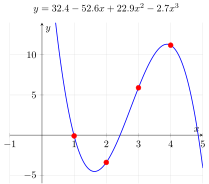
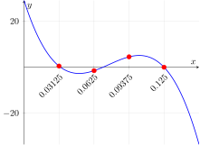
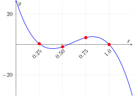

E21 Computer Engineering Fundamentals
November 9, 2026
Test 4
Final Project
Goal: Find the equation of a straight line that passes through two known points
The general equation of a polynomial of degree 1:
\(y = a_0 + a_1 x\)
‘Plug in’ the given points as two equations
\(\begin{aligned} y_0 &= a_0 + a_1 x_0 \\ y_1 &= a_0 + a_1 x_1\end{aligned}\)
Solve two simultaneous equations for the two unknowns
\(\begin{bmatrix} 1 & x_0 \\ 1 & x_1 \end{bmatrix} \begin{bmatrix} a_0 \\ a_1 \end{bmatrix} = \begin{bmatrix} y_0 \\ y_1 \end{bmatrix}\)
Find a straight line through 2 points \(\implies\) polynomial interpolation with degree 1
Goal: Find the equation of a straight line that passes through three known points
The general equation of a polynomial of degree 1:
\(y = a_0 + a_1 x\)
‘Plug in’ the given points as three equations
\(\begin{aligned} y_0 &= a_0 + a_1 x_0 \\ y_1 &= a_0 + a_1 x_1 \\ y_2 &= a_0 + a_1 x_2 \end{aligned}\)
Solve three simultaneous equations for the two unknowns
\(\begin{bmatrix} 1 & x_0 \\ 1 & x_1 \\ 1 & x_2 \end{bmatrix} \begin{bmatrix} a_0 \\ a_1 \end{bmatrix} = \begin{bmatrix} y_0 \\ y_1 \\ y_2 \end{bmatrix}\)
Not possible — too many equations; system is overdetermined
Goal: Find the equation of a straight line that passes through three known points
The general equation of a polynomial of degree 2:
\(y = a_0 + a_1 x + a_2 x^2\)
‘Plug in’ the given points as three equations
\(\begin{aligned} y_0 &= a_0 + a_1 x_0 + a_2 x_0^2 \\ y_0 &= a_0 + a_1 x_1 + a_2 x_1^2 \\ y_0 &= a_0 + a_1 x_2 + a_2 x_2^2 \end{aligned}\)
Solve three simultaneous equations for the two unknowns
\(\begin{bmatrix} 1 & x_0 & x_0^2 \\ 1 & x_1 & x_1^2 \\ 1 & x_2 & x_2^2 \end{bmatrix} \begin{bmatrix} a_0 \\ a_1 \\ a_2 \end{bmatrix} = \begin{bmatrix} y_0 \\ y_1 \\ y_2 \end{bmatrix}\)
Polynomial interpolation with degree 3
\[ \underbrace{\begin{bmatrix} x_0^0 & x_0^1 & x_0^2 & \cdots & x_0^n \\ x_1^0 & x_1^1 & x_1^2 & \cdots & x_1^n \\ \vdots & \vdots & \vdots & \ddots & \vdots \\ x_n^0 & x_n^1 & x_n^2 & \cdots & x_n^n \end{bmatrix}}_{A} \begin{bmatrix} a_0 \\ a_1 \\ \vdots \\ a_n \end{bmatrix} = \begin{bmatrix} y_0 \\ y_1 \\ \vdots \\ y_n \end{bmatrix} \]
The matrix \(A\) is a ‘Vandermonde Matrix’
A system of \(n+1\) equations for interpolating a polynomial of degree \(n\) through \(n+1\) points on the plane
Let’s look at some examples of Vandermonde matrices:
Calculate the Vandermonde matrix for for the interpolation of a cubic polynomial through the following four points: \(\begin{bmatrix} 1.0 \\ -0.1 \end{bmatrix}, \begin{bmatrix} 2.0 \\ -3.4 \end{bmatrix},\begin{bmatrix} 3.0 \\ 5.9 \end{bmatrix}, \begin{bmatrix} 4.0 \\ 11.2 \end{bmatrix}\)
\[ \begin{bmatrix} a_0 \\ a_1 \\ a_2 \\ a_3 \end{bmatrix} = \begin{bmatrix} x_0^0 & x_0^1 & x_0^2 & x_0^3 \\ x_1^0 & x_1^1 & x_1^2 & x_1^3 \\ x_2^0 & x_2^1 & x_2^2 & x_2^3 \\ x_3^0 & x_3^1 & x_3^2 & x_3^3 \end{bmatrix}^{-1} \begin{bmatrix} y_0 \\ y_1 \\ y_2 \\ y_3 \end{bmatrix} \]


Use Python to find the condition number (lecture 18) of the Vandermonde matrices for interpolating a polynomial to the following sets of points.
\(\overbrace{\begin{bmatrix} 0.03125 \\ 0.5 \end{bmatrix}, \begin{bmatrix} 0.0625 \\ -1.5 \end{bmatrix},\begin{bmatrix} 0.09375 \\ 4.5 \end{bmatrix}, \begin{bmatrix} 0.125 \\ 0 \end{bmatrix}}^{}\)
\(\underbrace{\begin{bmatrix} 0.25 \\ 0.5 \end{bmatrix}, \begin{bmatrix} 0.5 \\ -1.5 \end{bmatrix},\begin{bmatrix} 0.75 \\ 4.5 \end{bmatrix}, \begin{bmatrix} 1.0 \\ 0 \end{bmatrix}}_{}\)
The interval over which interpolation is carried out greatly affects condition number


\[f(x) = \frac{1}{1+25 x^2}\]
Find an interpolating polynomial that passes through 5 equally spaced points on \(f(x)\) from \(x=-1\) to \(x=+1\)
E21 • Fall 2026 • Lecture 19 • November 9, 2026 • ↩︎